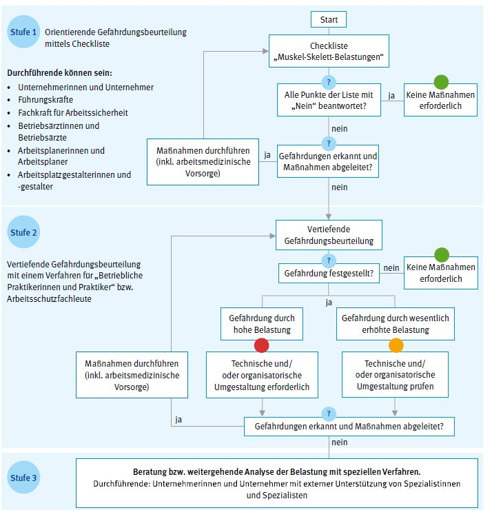

3 Wie beurteile ich Muskel-Skelett-Belastungen in meinem Betrieb?3 Wie beurteile ich Muskel-Skelett-Belastungen in meinem Betrieb?
3 Wie beurteile ich Muskel-Skelett-Belastungen in meinem Betrieb?3 Wie beurteile ich Muskel-Skelett-Belastungen in meinem Betrieb?Es existiert eine Vielzahl unterschiedlicher körperlicher Belastungen, für die jeweils geeignete Beurteilungsverfahren anzuwenden sind.
Psychische Faktoren, wie zum Beispiel hohe Arbeitsanforderungen, Unzufriedenheit mit der Arbeit, Arbeitsplatzunsicherheit sowie Monotonie, und deren Folgen können die Wirkung einer körperlichen Belastung verstärken.
Für die Durchführung der Gefährdungsbeurteilung bei körperlichen Belastungen bietet sich das folgende dreistufige Vorgehen an. Ein entsprechendes Ablaufschema ist in Abbildung 1 dargestellt.
Orientierende Gefährdungsbeurteilung
Um sich schnell einen Überblick zu verschaffen, ob und welche Gefährdungen im eigenen Betrieb überhaupt auftreten können, empfiehlt sich eine einfache, orientierende Gefährdungsbeurteilung anhand der Checkliste in Anhang 1. Diese Checkliste bietet mehrere Vorteile:
Wird mindestens ein Punkt der Checkliste mit "Ja" beantwortet, so ist das Vorliegen einer wesentlich erhöhten Muskel-Skelett-Belastung möglich. Dann sollten Sie Maßnahmen ergreifen, um die Belastungen zu vermindern, besser noch zu vermeiden und danach die Gefährdungsbeurteilung wiederholen.
Alternativ kann auch zum Beispiel das Einstiegsscreening der BAuA zur orientierenden Gefährdungsbeurteilung verwendet werden (www.baua.de/Leitmerkmalmethoden). Das Einstiegsscreening berücksichtigt keine Vibrationsbelastungen.
Können Belastungen mit Hilfe der Checkliste oder dem Einstiegsscreening nicht ausreichend beurteilt werden, so ist eine vertiefende Gefährdungsbeurteilung erforderlich.
Vertiefende Gefährdungsbeurteilung
Für eine vertiefende Gefährdungsbeurteilung gibt es folgende Gründe:
In diesen Fällen stehen verschiedene Verfahren zur Verfügung, die eine tiefergehende Gefährdungsbeurteilung erlauben. Die einzelnen Verfahren sind in der Tabelle im Anhang 2 zusammengefasst und richten sich an die Unternehmerinnen und Unternehmer, Fachkräfte für Arbeitssicherheit, Betriebsärztinnen und Betriebsärzte sowie beauftragte Beschäftigte.
Unterstützung durch externe Spezialistinnen und Spezialisten
Die in dieser Stufe anzuwendenden Verfahren der vertiefenden Gefährdungsbeurteilung sind in der Regel so komplex, dass ein alleiniges Bearbeiten durch betriebliche Expertise üblicherweise nicht möglich ist. Vielmehr ist eine Zusammenarbeit mit arbeitswissenschaftlichen Expertinnen und Experten, Arbeitsgestalterinnen und -gestaltern, Arbeitsmedizinerinnen und -medizinern und dergleichen erforderlich. Beim Vorliegen einer der folgenden drei Punkte ist eine spezielle Gefährdungsbeurteilung nach Stufe 3 notwendig:
Eine Auswahl von geeigneten Verfahren für derartige Gefährdungsbeurteilungen ist in Anhang 3 beispielhaft aufgeführt.
Für Fragen sollten Sie immer zuerst die zuständige Aufsichtsperson Ihres Unfallversicherungsträgers ansprechen. Sie erhalten dort fachkompetente Beratung, aber auch Unterstützung bei der Gefährdungsbeurteilung sowie eventuell eine weitergehende Belastungsanalyse.
Weitere Informationen zu speziellen Fragestellungen finden Sie am Ende dieser DGUV Information.

Abb. 15 Ablaufplan einer Gefährdungsbeurteilung für Muskel-Skelett-Belastungen